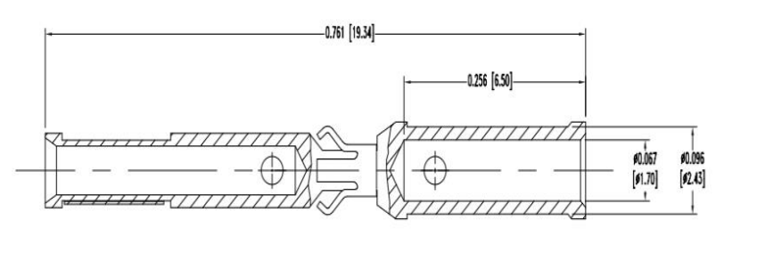

Research and software for embedded systems
Two groups of services. Research answers a question about a system before money goes into a design. Software turns the answer into a system description, requirements, protocols and firmware that another team can build on. We can start from a drawing, a legacy specification, an interface problem, an existing prototype or a product idea.
Check the idea before committing to it
Each research task starts with one written hypothesis and an acceptance criterion: which result confirms it and which rejects it. The output is evidence, not an opinion.
Prototyping

From a problem statement to a testable unit. A prototype exists to answer one question, so we build the smallest setup that can answer it: firmware on a development kit, a bench with real buses, sensors and actuators, a fixture, an adapter or a simulator of a device that does not exist yet.
Fits when
- the solution is not obvious yet
- customer feedback is needed quickly
- an expensive production decision must be checked first
Typical work
- concept alternatives and trade-offs
- proof-of-concept firmware and bench setup
- assembly, integration, basic validation
- recommendations for the next iteration
You receiveWorking prototype, test procedure, report with measured results and a clear yes or no on the hypothesis.
Mathematical analysis
Calculations that settle a design question before hardware is ordered. Every number comes with its assumptions and its derivation, so it can be reviewed.
- End-to-end timing and latency budgets: debounce, task periods, arbitration, transmission, actuation
- Bus load, worst-case response times, link budgets and radio coverage
- Reliability estimates (FIT, MTTF) for alternative architectures, per ISO 13849-1 and SN 29500 data
- Sizing: power, battery, memory, CPU headroom, recorder capacity
- Control loop and filter behaviour
You receiveAnalysis note with assumptions, method, results and margins.
Examples: safe-stop budget, 27.7 ms against 50 ms · link budget at 130 km · FIT of discrete circuit vs MCU
Computer modelling
Models of the plant, the controller or the firmware, used to compare options early and reused later for testing. When a model depends on measurements from the client's equipment, the plan says so: baseline model, experiment definition, measurement, calibration, validation.
- MATLAB / Simulink plant and controller models, code generation where it pays off
- Firmware on virtual targets (QEMU, Renode) before boards exist
- Scenario sets that move into software- and hardware-in-the-loop testing
You receiveModel, simulation scenarios, and a report on what the model shows and where it stops being valid.
System description, protocols and firmware
We close the system contract before individual disciplines optimise their own parts. Specification first, code second; every interface and requirement has a way to be tested.
Communication protocols
We engineer the communication layer as a system contract: the byte on the wire, the state machine behind it, the timing and fault behaviour around it, and the specification that keeps both ends implementable and testable by different teams.
CAN / CAN FD · RS-485 · UART · USB · Ethernet (UDP, TCP) · ROS 2 interfaces · radio telemetry links
Frame contract
Delimiting, header fields, payload typing, units, endianness, integrity trailer, reserved fields, versioning.
Behaviour
Command and response semantics, role arbitration, acknowledgements, retries, duplicate handling, idempotency, terminal failure states.
Timing
Serialisation, arbitration, task periods, host latency, timeout derivation, bus load and margin.
Data protection
CRC selection, E2E Data IDs, alive counters, freshness, replay protection; CMAC or HMAC where justified.
Failure management
Stale data, node loss, resynchronisation, bus-off recovery, safe-state entry, rate limiting, diagnostic counters.
Verification
Conformance suites, fault injection, replay and corruption tests, soak runs, HIL scenarios derived from the specification.
Security is separated from integrity
- Integrity
- CRC and E2E checks detect corruption, stale buffers, wrong delivery and sequence faults.
- Authenticity
- State-changing services use CMAC or HMAC with freshness values against forgery and replay.
- Confidentiality
- Encryption only where disclosure is a credible loss and the key life cycle is actually solved.
The message catalogue is machine-readable and under version control. Embedded headers, parsers, host tooling and the ICD tables are generated from one reviewed source, so no second hand-kept list drifts away from the code.
You receiveInterface control document, message catalogue, reference implementation in C/C++, conformance and fault-injection tests.
Examples: CAN ICD · USB CDC ICD · telemetry ICD · CAN node identification note
System description and requirements
We convert drawings, legacy specifications, interface descriptions, stakeholder input and operating scenarios into a system description and an allocated requirement baseline with explicit verification criteria. Requirements that survive design, integration and change.
System description
- Problem and scenarios
- Actors, start-up, normal operation, configuration, fault, degraded mode, recovery; constraints on timing, environment, safety, security, cost.
- Architecture and authority
- Decomposition, responsibilities, data and control flow; who owns state, who requests changes, who may reject them.
- Failure boundaries
- What happens when a node, link, sensor, actuator or service disappears.
- Interface control
- Physical (media, connectors, electrical limits, timing), logical (identifiers, frames, units, ranges, versions) and behavioural (sessions, retries, timeouts, safe state).
From source material to evidence
- Sourceneed, drawing, standard, interface, legacy behaviour
- Contextactors, scenarios, boundaries, assumptions
- Requirementone necessary, verifiable commitment
- Allocationsystem → HW / SW / mechanics / interface
- Evidencetest, analysis, inspection, review

What we change in a weak requirement
Ways to start
2–3 weeks
Requirements audit. Ambiguity, missing constraints, weak decomposition, allocation and verification gaps, broken traceability, ranked into a remediation plan.
Work package
Requirements development. Concept material, drawings, legacy documents and interfaces turned into a structured baseline.
Ongoing
Requirements ownership. Baseline maintenance, clarification, change impact; architecture and verification kept aligned as the product evolves.
Standards applied where they add engineering control
- ISO/IEC/IEEE 29148
- Requirements processes, information items and characteristics
- Automotive SPICE 4.0
- SYS.2, HWE.1, SWE.1 requirements analysis
- ISO 26262 · ISO/SAE 21434
- Safety and cybersecurity requirements, decomposition, allocation, traceability
- IEC 61508
- Functional-safety life cycle for industrial E/E/PE systems
You receiveSystem description, stakeholder and system requirements, HW / SW requirements, ICDs, traceability and verification matrices, assumption and open-point registers, audit findings, change-impact analysis.
Examples: 68 requirements for a sintering furnace · system description and requirements in each ICD case
Firmware development

First define the contract, then implement, test on a virtual target, fix, and move to the real MCU or SoC. Documentation is the engineering contract for implementation, review, testing and future porting.
- Analysisuse case, constraints, interfaces, acceptance
- Design descriptioncomponents, states, data flow, errors
- Protocolframes, roles, timing, faults
- Virtual targetDocker, QEMU, Renode
- Real targetbring-up, HW/FW tests, handover
Gate A before implementation: use cases, constraints, interfaces and acceptance are fixed. Gate C before review: runnable build, logs, test evidence, source, models and handover package agree.
Linux and ROS 2Main focus
- Embedded Linux on ARM application processors
- ROS 2 nodes, interfaces, launch files and parameters; ros2_control hardware interfaces; simulation scenes for behaviour checks
- User-space drivers over SocketCAN, libgpiod and serial
- Computer vision and AI inference on the target
Zephyr configuration
- Board definitions, devicetree and Kconfig
- Peripheral and driver setup on microcontrollers
- MCU-side protocol stacks and bootloader configuration
Alpine Linux
- Minimal aarch64 images with OpenRC services
- Boot-time reduction to an application-ready target
- SSH service access, persistent logging, A/B updates with rollback
How code gets written
- C/C++ for embedded logic, drivers, protocol handling and target integration
- Python for prototypes, tools, test scripts and automation
- MATLAB / Simulink where models and generated code make variants easier
- AI-assisted generation for scaffolds, parsers, serializers and tests from reviewed documents; handwritten code where direct engineering control is required
You receiveSource code, models, Docker build setup, system image, design description, test evidence.
Examples: Linux on i.MX93 with Alpine · HMI and control firmware over CAN · Whisper pipeline on Linux
Four ways to work together
Choose by the result you need. Every format runs the same loop: context, scope with acceptance criteria, engineering, evidence and handover.
Prototype
From problem statement to a testable unit, fast and cheap, before production money is spent.
Concepts and trade-offs · prototype · validation · next-step advice
Work package
A bounded task with input data, scope, expected result and acceptance criteria. You get an output, not headcount.
Risk list · plan and milestones · implementation · evidence
Documentation
Knowledge trapped in chats and meetings turned into requirements, interface descriptions, test plans and handover packages.
Requirements · ICDs · test plans · handover package
Capacity
Engineers join your team when tasks are clear but execution is slow or a discipline is missing.
Role-based support · clear ownership · regular sync
One technical owner
We do not split system responsibility between subcontractors. The core team owns requirements, architecture, protocols, firmware, integration and verification. When a project needs facilities we do not run ourselves, we specify the work, coordinate it and accept the result against the requirements.
- Kept in the core team
- System description and requirements, protocols, firmware and software, modelling and analysis, integration, verification planning, documentation
- Through partners, under our acceptance
- PCB layout and assembly, parts manufacturing, harness production, accredited laboratory tests and certification, field trials
Send the system context, the expected result, constraints and timeline. We reply with questions or a first step.
Describe the task